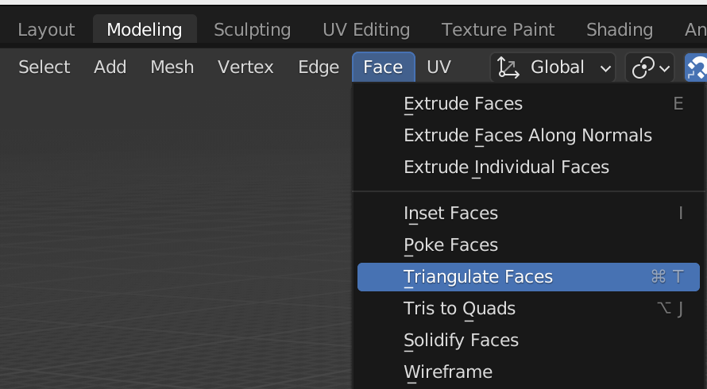
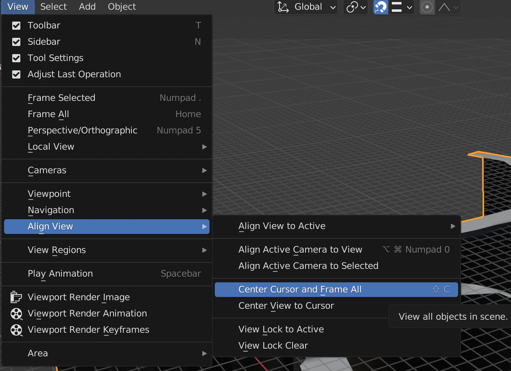
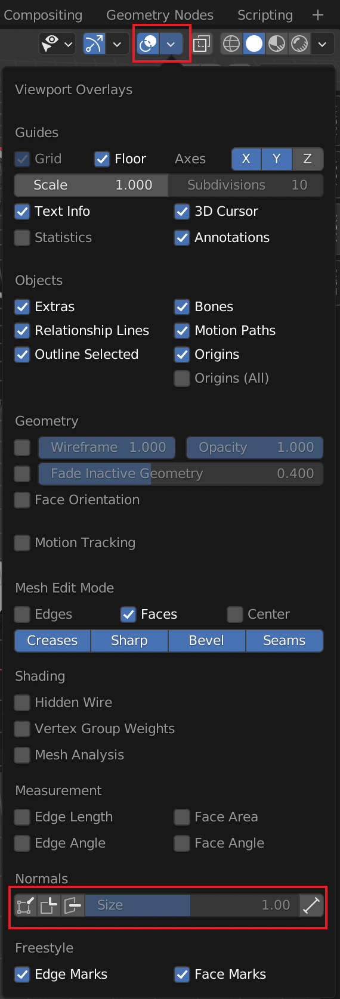

Blender
Table of Contents
Blender note.
<!– more –>
Blender
基本操作
| 快捷键 | 功能 | 分类 |
|---|---|---|
| 按下鼠标滚轮拖动 | 旋转视角 | 视窗 |
| Shift+按下鼠标滚轮拖动 | 拖动视角 | |
| 滚动鼠标滑轮 | 拉近拉远视角 | |
| 选择对称的点/线/面 | Select/Select Mirror | 选择 |
| Ctrl+ Mouse Right Click | Cut Node Link | Node Edit |
显示模型顶点属性值
Tips: 在 EditMode 下，才会只显示选中的顶点
可视化模型顶点属性
在 shading 中，按照如下方法修改 material，从而显示输入属性。

导入 FBX
File / Import 选择 FBX 文件
快速找到物体
在 SceneCollection Tree 中，选中物体，然后点击命令 View/Local View/Toggle Local View
切分物体 组合物体
切分物体： 进入 EditMode, 选择需要切分出去的面，右键菜单中选择 Separate / Selection, 就可以将选择的面从物体中分离出来。
组合物体： 进入 ObjectMode, 选择需要合并在一起的物体，右键菜单中选择 Join, 就可以将所有选中的物体合并在一起。
按照材质切分物体： 进入 EditMode, 右键菜单中选择 Separate / By Material
Quad Mesh to Triangle Mesh

删除 image

View
无法移动 3D 视图
Shift + C View/Align View/Center Cursor and Frame All

Select
选择模型上一圈边
Edtor Mode 下，选中一条边，Select / Select Loops/ Edge Loops
Normal
显示模型的 normal
- 切换到 EditMode
- Viewport Overlays 面板中进行设置

Tips: 只有在 Edit Mode 下，Modeling Workspace 下才会显示 normal
Mesh Seam Normal 不同
- 先将 LV02 LV03 两个分别 mesh copy 一份
- 将 Copy 出来的两个 Mesh Join 在一起得到 LV03-bak
- 进入 Edit Mode, Mesh/Merge/ByDistance, 此时接缝处的 normal 就是相同的了
- 使用 DataTransfer 将 LV03-bak 的 normal copy 给 LV02 和 LV03


UV
独立显示部分 UV
选中需要独立显示的 UV， UV Editor 中 UV 菜单下，Show-Hide Faces/Hide Unselected
缝合边
| 找出缝合边 | UV Editor View 中 | UV/Seams from Islands |
| 标记缝合边 | 3D Viewport 中 | 切换到边模式，选中边， UV/ Mark Seam |
| 清除缝合边 | 3D Viewport 中 | 切换到边模式，选中边， UV/ Clear Seam |
| 选中 Seam 边 | 3D Viewport 中 | 切到边模式，选中属于 Seam 的一条边，Select/SelectSimilar/Seam |
| 对边所属的面进行缝合 | UV Editor View 中 | 切到边模式，选中要缝合的一条边，UV/Stitch |
| 将 UV 缩放到画布大小 | UV Editor View 中 | 全选所有边，UV/Pack Islands |
调整 UV 顺序
选中顺序不正确的 UV，添加新 uv，然后，删除顺序不正确的 uv。
Copy UV 到另一个物体
方案 1 要求物体拓扑结构完全相同
Object Mode 下:
- 选择 Des 物体，选择要填充的 uv
- Ctrl 选择 Source 物体，选择要 copy 的 uv
- 在 Object 菜单中选择，Link/Transfer Data/Copy UV Maps
方案 2 要求物体拓扑结构完全相同
Data Transfer
方案 3 支持从整体到分割出的一部分的 copy
Geometry Node: obj0 uv -> obj0 vertex color
DataTransfor : obj0 vertex color -> obj1 vertex color
Geometry Node: vertex color -> uv
Unwrap UV to Square
- 将一个方向上所有边的最左，最右两个端点移动到对应的 UV Corner。
选中该方向的所有边

- UV/ Align/ Straighten Y, 将选中的 UV 边变为直线，移动选中边到 Y=0。
- Pivot 选择为 Median Point
缩放 UV 到 0-1 范围

- 右键菜单中选择 Spin
- 其他 3 个方向的边，做类似 1-6 步骤的处理
- 对模型重新 unwrap
https://blender.stackexchange.com/questions/41132/how-do-i-straighten-uv-maps
镜像 UV
- UV Editor 中, 选中所有 UV
- Pivot 选择为 Bounding Box Center
- 右键菜单中选择 Mirror X 或 Mirror Y
UV Editor 中对齐选中顶点的 UV
Vertex Select 模式下，选中需要对齐的 UV 顶点，执行 UV/Align/Align Auto 命令
Geometry Node
Base
vertex color to uvmap
Rendering
关闭物体阴影
Object Properties->Visibility->Ray Visibility->Shadow (check/uncheck).
Compositing
设置输出图片尺寸

Case Study
ERROR
ASCII FBX files are not supported
Cycles 渲染结果为灰色
如下图，Cycles 渲染结果为灰色，这是因为将物体的 Mask Shadow Catcher 被勾选了。
Object Properties->Visibility->Mask Shadow Catcher 取消勾选就可以了。

Cycles 烘培 lightmap 结果有很多 Gradiant
将物体缩小后再烘培。
Blender Python Script
FAQ
print to console
import bpy def print(data): for window in bpy.context.window_manager.windows: screen = window.screen for area in screen.areas: if area.type == 'CONSOLE': override = {'window': window, 'screen': screen, 'area': area} bpy.ops.console.scrollback_append(override, text=str(data), type="OUTPUT")
Get Vertices in Vertex Group
import bpy ob = bpy.context.object me = ob.data is_editmode = me.is_editmode vgroup = ob.vertex_groups["Group"] if is_editmode: ctx = bpy.context.copy() ctx["object"] = ob bpy.ops.object.editmode_toggle(ctx) vgroup.add([v.index for v in me.vertices if v.select], 1.0, 'REPLACE') if is_editmode: bpy.ops.object.editmode_toggle(ctx)
ERROR
Python script fail, look in the console for now
Windows 在 Window 菜单中点击 Toggle System Console
OSX 双击 /Applications/Blender.app/Contents/MacOS/Blender 打开
Linux
cd /usr/share/applications
gtk-launch blender.desktop
TypeError: unsupported operand type(s) for *: 'bpy_prop_array' and 'float'
将属性转换为 Vector, 再进行操作
from mathutils import Color color = Vector(vcolor_list.data[loop.index].color) * 2.2